Monstruos:
Los Monstruos se pueden encontrar en Las minas, la Caverna Calavera, la Mina de cantera, la Madriguera de Bichos Mutantes y la Mazmorra del volcán. Cuando son asesinados, los monstruos tienen una probabilidad de dejar caer un Botín de monstruo y una variedad de objetos.
Monstruos en la granja
Los monstruos se pueden encontrar por la noche en La granja dependiendo del tipo de granja. Los monstruos se activan de forma predeterminada al comienzo del juego en la Granja salvaje, o al seleccionar la Opción Avanzada "Generar monstruos en la granja" en la creación de la nueva partida. Ofrecer un bollo extraño al Altar oscuro del terror en la Cabaña de la Bruja activará o desactivará a los monstruos.
Los monstruos en La granja escalarán con el nivel de Combate del jugador. (En niveles más altos, aparecerán monstruos más difíciles y el Gólem salvaje se volverá más difícil de asesinar).
Monstruos peligrosos
Los monstruos en las Minas y la Caverna Calavera se vuelven más peligrosos durante las misiones Peligro en las profundidades y la Invasión de la Caverna de la Calavera, o mientras el Altar del Desafío se cambia a su posición de 'encendido'.
Los monstruos peligrosos tienen sprites y estadísticas únicos en comparación con sus contrapartes normales. El Fantasma pútrido, Mago esqueleto, y el Francotirador sombrío también cuentan con desventajas únicas.
Lista de Monstruos
| Las Minas | ||||
|---|---|---|---|---|
| Todos los pisos | Pisos 1-29 | Pisos 31-39 | Pisos 41-79 | Pisos 81-119 |
|
|
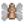 Mosca |
|
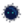 Duende del Polvo |
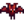 Murcielago de Lava 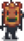 Chaman de las Sombras 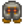 Cabeza de Metal |
 Baba Verde
Baba Verde  Bicho
Bicho  Cavadorín
Cavadorín  Larva
Larva  Cangrejo de Roca
Cangrejo de Roca  Murcielago
Murcielago  Golem de Piedra
Golem de Piedra  Murcielago de hielo
Murcielago de hielo  Baba Azul
Baba Azul  Fantasma
Fantasma  Esqueleto
Esqueleto  Baba Roja
Baba Roja  Cangrejo de Lava
Cangrejo de Lava  Bestia de las Sombras
Bestia de las Sombras  Niño Calamar
Niño Calamar | Caverna Calavera | Mina de cantera | Madriguera de bichos mutantes | Mazmorra del volcán |
|---|---|---|---|
|
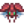 Bicho Armado 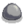 Baba Grande 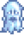 Fantasma de Carbón 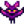 Murciélago de Iridio 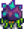 Cangrejo de Iridio Murciélago de Lava 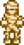 Momia 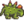 Pimienta Rex 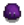 Baba Lila 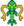 Serpiente |
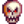 Calavera Encantada 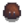 Baba Cobre 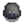 Baba Hierro |
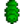 Larva Mutante 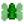 Mosca Mutante |
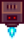 Centinela Enano 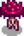 Seta Magmática Falsa 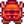 Cabeza Caliente 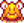 Acechador de la Lava 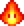 Duende de Magma 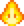 Chisporroteador de Magma 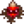 Cavadorín de Magma 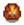 Baba Tigre |
| Granja Salvaje | ||||
|---|---|---|---|---|
| Cualquier nivel de combate | Combate nivel 0-3 | Combate nivel 4-7 | Combate nivel 8-9 | Combate nivel 10 |
|
|
|
|
|
|
| Minas Peligrosas | ||||
|---|---|---|---|---|
| Todos los pisos | Pisos 1-29 | Pisos 31-39 | ||
|
|
|
|
||
| Pisos 41-69 | Pisos 71-79 | Pisos 81-119 | ||
| Granja Salvaje | ||||
|---|---|---|---|---|
| Cualquier nivel de combate | Combate nivel 0-3 | Combate nivel 4-7 | Combate nivel 8-9 | Combate nivel 10 |
|
|
|
|
|
|